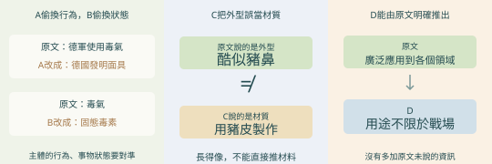
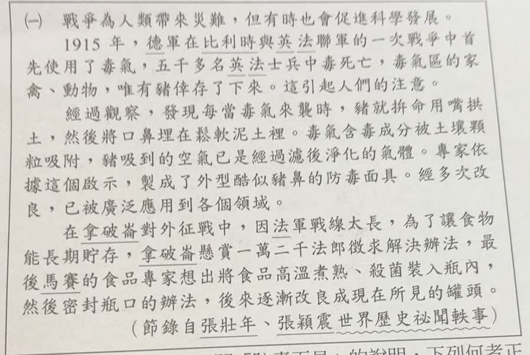
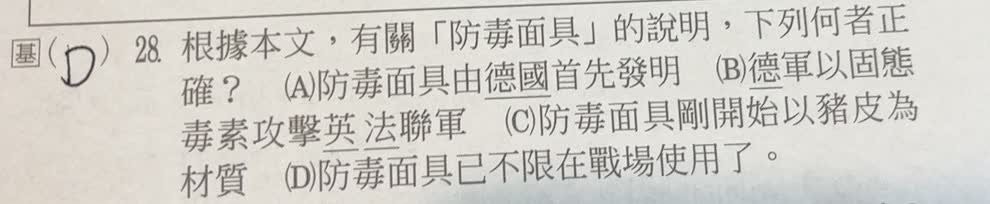
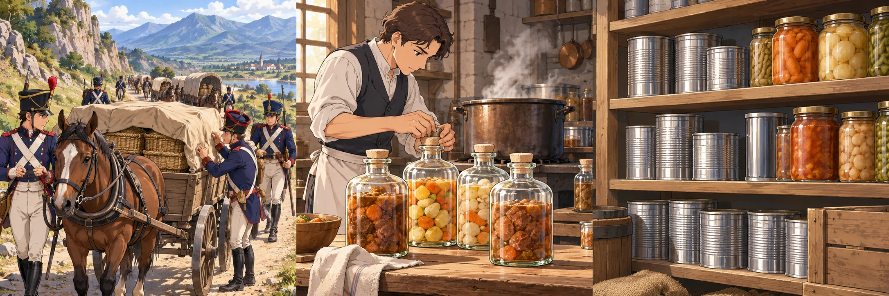
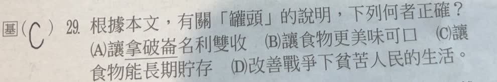
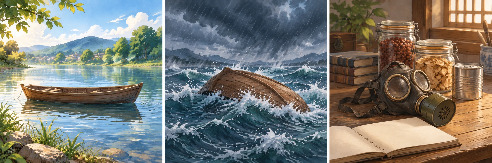

完整原題
作答所需文章／材料
戰爭為人類帶來災難，但有時也會促進科學發展。 1915年，德軍在比利時與英法聯軍的一次戰爭中首先使用了毒氣，五千多名英法士兵中毒死亡，毒氣區的家禽、動物，唯有豬倖存了下來。這引起人們的注意。 經過觀察，發現每當毒氣來襲時，豬就拼命用嘴拱土，然後將口鼻埋在鬆軟泥土裡。毒氣含毒成分被土壤顆粒吸附，豬吸到的空氣已是經過濾後淨化的氣體。專家依據這個啟示，製成了外型酷似豬鼻的防毒面具。經多次改良，已被廣泛應用到各個領域。 在拿破崙對外征戰中，因法軍戰線太長，為了讓食物能長期貯存，拿破崙懸賞一萬二千法郎徵求解決辦法，最後，馬賽的食品專家想出將食品高溫煮熟、殺菌裝入瓶內，然後密封瓶口的辦法，後來逐漸改良成現在所見的罐頭。 （節錄自張壯年、張穎震《世界歷史祕聞軼事》）國文第28題｜防毒面具材料的資訊比對
國文第29題｜罐頭發展目的的資訊擷取
國文第30題｜戰爭與科技的正反關係
先想一想，再查看答案、解說與原圖
國文第28題｜防毒面具材料的資訊比對
分享原卷｜第 28 題 · 首次出題日期 2026-08-26 · 原AI對話 ↗
逐項解析
| 選項與原句 | 判讀 | 句意與判斷理由 |
|---|---|---|
| (A) 防毒面具由德國首先發明 | 不選 | 原文說德軍使用毒氣，沒有說德國首先發明防毒面具。 |
| (B) 德軍以固態毒素攻擊英法聯軍 | 不選 | 原文說毒氣，不是固態毒素。 |
| (C) 防毒面具剛開始以豬皮為材質 | 不選 | 原文說外型酷似豬鼻，沒有說以豬皮製作。 |
| (D) 防毒面具已不限在戰場使用了 | 應選 | 原文明說已廣泛應用到各個領域。 |
詳細說明與解題步驟
先將原文用語與選項逐一對照。已被廣泛應用到各個領域，表示用途不限戰場，因此D正確。
A把使用毒氣的一方當作面具發明者；B改變物質狀態；C把外型比喻誤當材質。三者都添加或改換原文資訊。
這裡是依材料判讀敘述，不將這段通俗故事當成完整發明史，或把泥土能淨化毒氣擴張成任何物質、任何條件都有效的科學定律。

① A、B先查主體行為與物質狀態
原文說德軍使用毒氣，A卻改成德國發明防毒面具，使用者不等於發明者；B又把毒氣改成固態毒素，改動了物質狀態。兩項都沒有忠實保留原文資訊。
② C把像什麼，偷換成用什麼做
「外型酷似豬鼻」只在說外觀相像，並沒有說面具用豬皮製成。外型與材質是兩種不同資訊，不能因為長得像，就自行補上製作材料。
③ D的不限戰場，有明確句子支持
末句說面具「已被廣泛應用到各個領域」，可以直接推出用途不限於戰場，故D正確。本題是根據材料比對敘述，重點在有沒有原文支持。
④ 逐項比對：誰做什麼、外型、材質、用途
答案：D，防毒面具已不限在戰場使用
- A換了行為：使用毒氣，不等於發明面具。
- B換了狀態；C換了資訊類別：外型不是材質。
- D有末句廣泛應用到各個領域直接支持。
核對註記：已核對題幹、全部選項與必要材料；教材對應課次未確認，歸綜合。
原圖（僅本題）


國文第29題｜罐頭發展目的的資訊擷取
分享原卷｜第 29 題 · 首次出題日期 2026-08-26 · 原AI對話 ↗
逐項解析
| 選項與原句 | 判讀 | 句意與判斷理由 |
|---|---|---|
| (A) 讓拿破崙名利雙收 | 不選 | 材料沒有說拿破崙因此名利雙收。 |
| (B) 讓食物更美味可口 | 不選 | 這不是文中懸賞解決的主要問題。 |
| (C) 讓食物能長期貯存 | 應選 | 文中直接說為了讓食物能長期貯存。 |
| (D) 改善戰爭下貧苦人民的生活 | 不選 | 材料談法軍補給，不是以改善貧苦人民生活為直接目的。 |
詳細說明與解題步驟
從因果句找目的：法軍戰線太長，食物不易保存，才懸賞徵求辦法。高溫處理、裝瓶密封的敘述，用來回應長期貯存的需要，所以選C。
不能把現代罐頭可能有的其他用途，替換成這篇文章所寫的直接目的；也不能自行推論發明者或統治者因此獲利。

① 問題是戰線長，保存不易
文章交代法軍戰線太長，食物保存成了問題。讀到為了，就要留意後面接的目的；本段直接寫讓食物能長期貯存。
② 裝瓶密封，回應保存需求
文章接著敘述食品處理後裝入瓶內，再密封瓶口的做法。這個方法在文中回應前面的保存問題，並不是在強調口味變得更好。
③ 後來的罐頭，也扣住這個目的
文中說這個做法後來逐漸改良成罐頭。問根據本文，就要回到保存需求選C；A的名利與D的貧苦人民生活，都不是這段寫的直接目的。
④ 抓住為了：長期貯存才是直接目的
答案 C：讓食物能長期貯存
- 法軍戰線長，提出食物保存需求。
- 為了後面接的目的，是最直接文字證據。
- 依本文作答，分清目的、做法與後續發展。
核對註記：已核對題幹、全部選項與必要材料；教材對應課次未確認，歸綜合。
原圖（僅本題）


國文第30題｜戰爭與科技的正反關係
分享原卷｜第 30 題 · 首次出題日期 2026-08-26 · 原AI對話 ↗
逐項解析
| 選項與原句 | 判讀 | 句意與判斷理由 |
|---|---|---|
| (A) 水能載舟，亦能覆舟 | 應選 | 同一事物可能帶來不同、甚至相反的作用，最能對應戰爭災難與促成科技發展的兩面。 |
| (B) 如人飲水，冷暖自知 | 不選 | 重點是親身體會，非本文主旨。 |
| (C) 福無雙至，禍不單行 | 不選 | 只談禍事接連，未涵蓋促進科學的另一面。 |
| (D) 工欲善其事，必先利其器 | 不選 | 只談做好工具的準備，未概括首句的正反關係。 |
詳細說明與解題步驟
文章開頭已說主旨：戰爭帶來災難，但有時也促進科學發展；後面以防毒面具、食物保存兩例說明。因此A同一事物具有利弊兩面的比喻最相近。
D雖提工具，看似可對應面具與罐頭，卻漏掉文章刻意呈現的正反關係。概括全文須能涵蓋總說與兩個例子，不能只挑到與某個名詞有關的句子。

① 水能載舟：先看到助益的一面
A先說水可以承載船隻，帶來助益。這是在把事物的作用分成兩面來看；但只讀到載舟，還不夠，還要接著讀後半句。
② 亦能覆舟：同一事物也可能有害
後半說水也能使船翻覆。前後都是水，作用卻可能相反，構成正反對照。A重在這種兩面關係，不是在說本文真的討論了船或水溫。
③ 回扣總說：災難，但有時促進科學
本文首句說戰爭帶來災難，但有時也促進科學發展，後以防毒面具與食物保存作例子。A能概括這個正反關係；D只談先準備好工具，漏掉了文章的另一面。
④ 同一事物的正反兩面：水能載舟，亦能覆舟
答案：A，水能載舟，亦能覆舟
- 概括全文先抓首句總說，再看例子如何支持。
- B談親身感受；C談福禍接連，與本文重點不同。
- D只抓工具，A才保留同一事物的正反作用。
核對註記：已核對題幹、全部選項與必要材料；教材對應課次未確認，歸綜合。
原圖（僅本題）